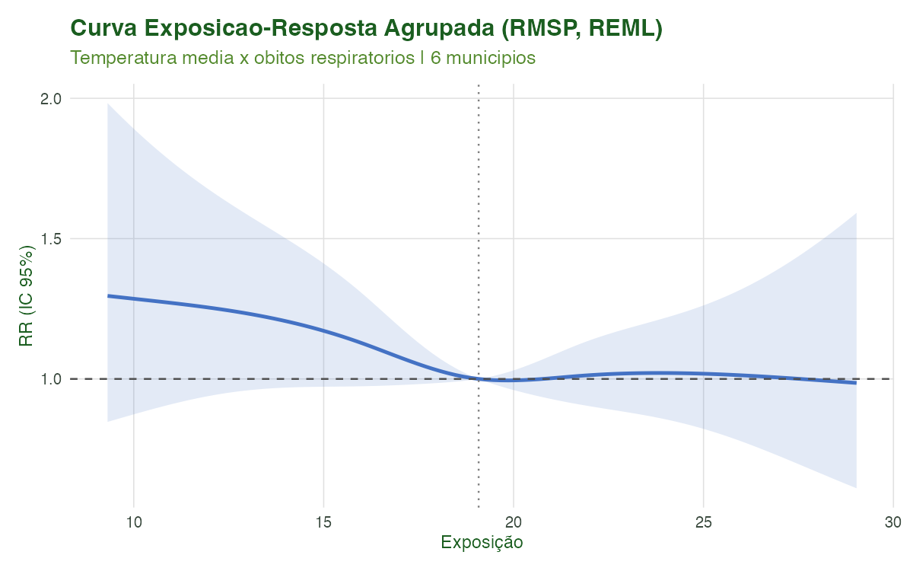
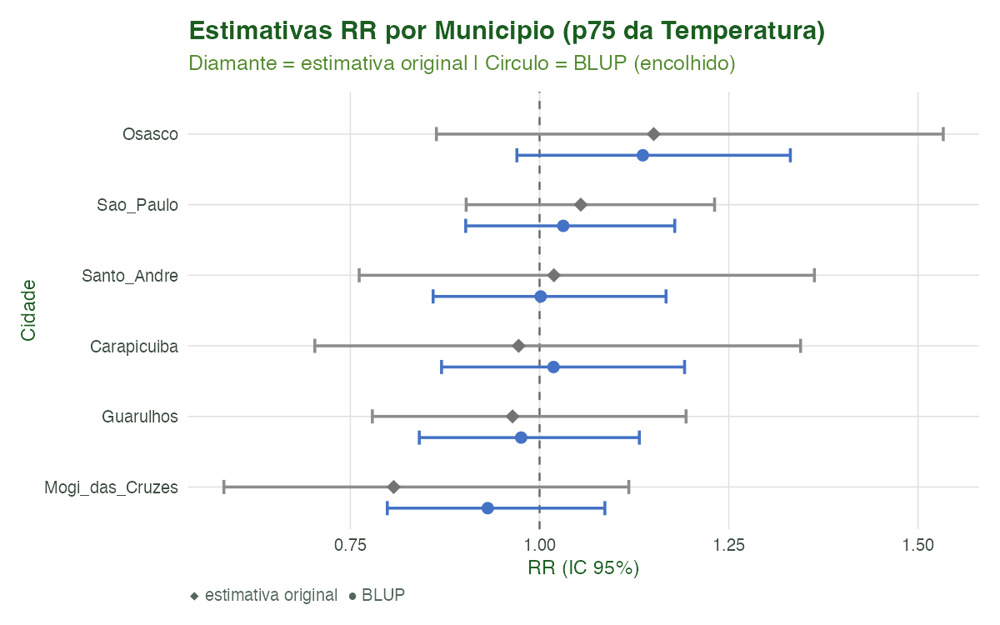
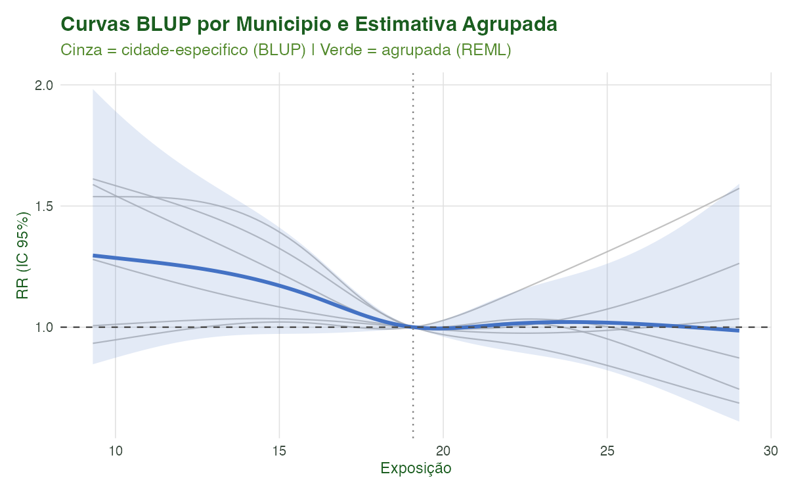
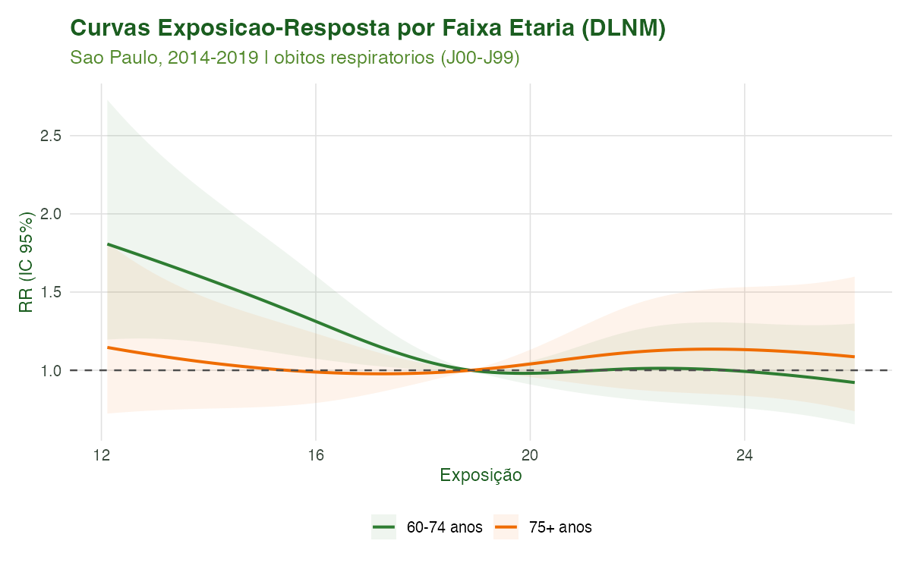
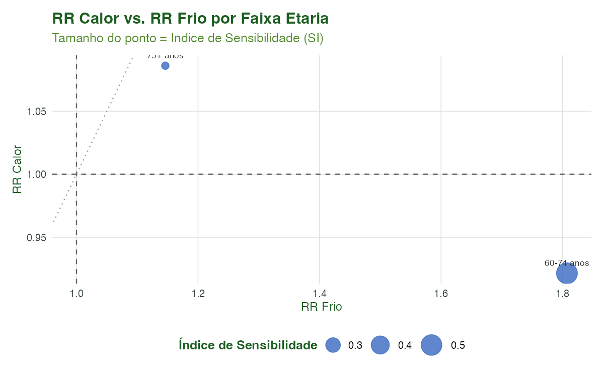
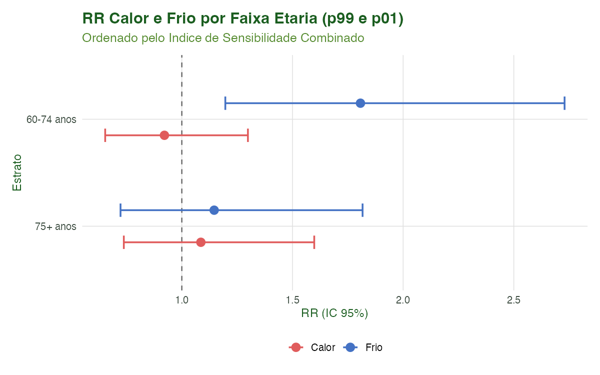

Modelagem 04: Análise Multi-cidade — Pooling, Meta-regressão e Sensibilidade
Equipe climasus4r
14/06/2026
Source:vignettes/mod-04-multicidade.Rmd
mod-04-multicidade.RmdObjetivo
Ao final deste tutorial você será capaz de:
- Ajustar um DLNM por cidade e reunir os modelos numa lista nomeada.
-
Agrupar as estimativas via meta-análise
multivariada dois estágios (
sus_mod_pool()), obtendo uma curva exposição-resposta combinada com estatísticas de heterogeneidade (Cochran Q, I²) e BLUPs (Best Linear Unbiased Predictors) por cidade. -
Aplicar meta-regressão
(
sus_mod_metaregression()) para testar se uma covariável de cidade (ex.: IDH) explica parte da heterogeneidade entre municípios. -
Comparar subgrupos populacionais
(
sus_mod_sensitivity()) — por exemplo, faixas etárias de idosos — identificando quais são mais vulneráveis ao calor e ao frio. -
Visualizar todos os resultados com as funções
pareadas
sus_mod_plot_pool()esus_mod_plot_sensitivity().
Este é o Tutorial 4 de Modelagem da série do
climasus4r, enquadrado pelo chapéu do
bioestatístico / epidemiologista ambiental. Os dados de
entrada são as saídas encadeadas dos tutoriais anteriores:
dados/caso_serie.rds (série diária de saúde) e
dados/caso_clima_estacao.rds (temperatura INMET
alinhada).
Contexto científico
A abordagem dois estágios em epidemiologia ambiental
Estudos multi-cidade estimam a associação clima-saúde em cada localidade separadamente (Estágio 1) e depois combinam as estimativas num único estimador médio (Estágio 2), permitindo também quantificar a variação entre locais (heterogeneidade). Essa estrutura é conhecida como análise dois estágios (Gasparrini et al., 2012; Gasparrini & Armstrong, 2013).
No contexto dos Modelos de Defasagem Distribuída Não-linear (DLNM), cada cidade contribui com um vetor de coeficientes do cross-basis e sua matriz de variância-covariância. O segundo estágio combina esses vetores por meta-análise multivariada (Berkey et al., 1995; White, 2011), preservando toda a dimensão lag do efeito.
Heterogeneidade entre cidades
A heterogeneidade real nas associações temperatura-mortalidade entre cidades brasileiras foi documentada em estudos como o de Zhao et al. (2021) e em análises regionais que apontam gradiente Norte-Sul influenciado por temperatura média, altitude e estrutura demográfica. O IDH é frequentemente empregado como proxy da capacidade adaptativa local (Gasparrini et al., 2015).
Sensibilidade por subgrupos
A análise de sensibilidade compara curvas exposição-resposta entre estratos populacionais (grupos etários, sexo, quintil de renda), identificando quais subgrupos exibem maior risco relativo frente a extremos térmicos — informação diretamente utilizável em planos de ação em saúde.
Caso condutor. Neste tutorial investigamos a temperatura e os desfechos respiratórios (J00–J99) em idosos (60+) na Região Metropolitana de São Paulo, 2014–2019. Ajustamos um DLNM para cada um dos seis maiores municípios da RMSP, agrupamos via
sus_mod_pool()(REML, BLUPs), aplicamossus_mod_metaregression()com o IDH como covariável de cidade e avaliamos a sensibilidade por faixa etária (60–74 vs. 75+) comsus_mod_sensitivity(). O objetomod_poolajustado é salvo emdados/mod_pool.rdspara reuso nos tutoriais seguintes.
Dados utilizados
| Objeto | Origem | Conteúdo |
|---|---|---|
caso_serie.rds |
Tutorial 4 (Variáveis/Agregação) | Série diária de óbitos por município da RMSP |
caso_clima_estacao.rds |
Tutorial 7 (Clima — Estações) | Temperatura média diária INMET alinhada por município |
mod_fits_cidades.rds |
Este tutorial (Bloco 3) | Lista de climasus_dlnm por município |
mod_pool.rds |
Este tutorial (saída) |
climasus_pool — resultado do pooling REML |
Se os arquivos de entrada não estiverem presentes, o script
scripts/modelagem_04_multicidade.R sintetiza séries com
sinal temperatura-mortalidade em V, realistas o suficiente para ilustrar
o funcionamento das funções.
Pipeline completo
Carregue o pacote e a infraestrutura de tutorial:
library(climasus4r)Bloco 0 — Verificar pacotes Suggests
As funções de pooling dependem de dlnm,
splines e mvmeta (Suggests). Proteja toda
chamada:
tem_dlnm <- all(vapply(c("dlnm", "splines"),
function(p) requireNamespace(p, quietly = TRUE),
logical(1L)))
tem_mvmeta <- requireNamespace("mvmeta", quietly = TRUE)
if (!tem_mvmeta)
message("Instale mvmeta: install.packages('mvmeta')")Bloco 1 — Carregar ou sintetizar séries por município
# Nota: os caminhos abaixo são relativos à RAIZ do pacote
# (scripts/ e vignettes-pt/ estão no mesmo nível).
# Em sessão interativa, defina o diretório de trabalho com setwd() antes.
MUNICIPIOS <- c("Sao_Paulo", "Guarulhos", "Osasco",
"Santo_Andre", "Mogi_das_Cruzes", "Carapicuiba")
# Carregar caso_serie.rds e caso_clima_estacao.rds se disponíveis
# (produzidos pelos Tutoriais 4 e 7 do pipeline, respectivamente)
path_saude <- file.path("vignettes-pt", "dados", "caso_serie.rds")
path_clima <- file.path("vignettes-pt", "dados", "caso_clima_estacao.rds")
if (file.exists(path_saude) && file.exists(path_clima)) {
# Usa dados reais do pipeline anterior
caso_serie <- readRDS(path_saude)
caso_clima <- readRDS(path_clima)
# series_municipios: lista nomeada com um tibble por município
series_municipios <- split(caso_serie, caso_serie$municipio)
} else {
message("Dados encadeados ausentes — o script gerará séries sintéticas realistas.")
# O script modelagem_04_multicidade.R constrói series_municipios internamente
}Bloco 2 — Construir colunas de lag (crossbasis input)
VAR_TEMP <- "tair_dry_bulb_c"
DESFECHO <- "n_obitos"
LAG_MAX <- 21L
DOF_ANO <- 6L
# Função auxiliar: adiciona colunas de lag 0-LAG_MAX e promove a climasus_df
.construir_df_lags <- function(serie, nome_mun) {
df_lags <- serie |> dplyr::arrange(date)
for (k in 0L:LAG_MAX) {
df_lags[[paste0(VAR_TEMP, "_lag", k)]] <- dplyr::lag(df_lags[[VAR_TEMP]], n = k)
}
df_lags <- df_lags |>
dplyr::select(date, dplyr::all_of(DESFECHO),
dplyr::all_of(paste0(VAR_TEMP, "_lag", 0L:LAG_MAX))) |>
tidyr::drop_na()
attr(df_lags, "sus_meta") <- list(
system = "SIM", stage = "climate", type = "distributed_lag",
backend = "tibble",
history = paste0("[derivado] ", nome_mun, " — lags")
)
class(df_lags) <- c("climasus_df", class(df_lags))
df_lags
}
# series_municipios: lista nomeada de tibbles (carregada/sintetizada no Bloco 1)
dfs_lags <- lapply(seq_along(MUNICIPIOS), function(i) {
.construir_df_lags(series_municipios[[i]], MUNICIPIOS[[i]])
})
names(dfs_lags) <- MUNICIPIOSBloco 3 — Ajuste do DLNM por município (Estágio 1)
fits_cidades <- lapply(MUNICIPIOS, function(nm) {
sus_mod_dlnm(
df = dfs_lags[[nm]],
outcome_col = DESFECHO,
climate_col = VAR_TEMP,
lag_max = LAG_MAX,
argvar = list(fun = "ns", df = 4L),
arglag = list(fun = "ns", df = 3L),
family = "quasipoisson",
dof_per_year = DOF_ANO,
lang = "pt",
verbose = FALSE
)
})
names(fits_cidades) <- MUNICIPIOSBloco 4 — sus_mod_pool(): meta-análise multivariada
(Estágio 2)
mod_pool <- sus_mod_pool(
fits = fits_cidades, # lista nomeada de climasus_dlnm
exposure_range = NULL, # deriva do intervalo observado em todas as cidades
n_grid = 100L, # pontos na grade de predição
pred_at = c(0.75, 0.90, 0.95, 0.99), # quantis para tabela-resumo
blup = TRUE, # calcula BLUPs cidade-específicos
method = "reml", # estimação REML (recomendado)
lang = "pt",
verbose = TRUE
)
print(mod_pool)Bloco 5 — sus_mod_metaregression(): explicando a
heterogeneidade
# Covariável de cidade: IDH municipal (padronizado internamente)
cov_idh <- data.frame(
idh = c(Sao_Paulo = 0.805, Guarulhos = 0.763, Osasco = 0.776,
Santo_Andre = 0.815, Mogi_das_Cruzes = 0.783, Carapicuiba = 0.749),
row.names = MUNICIPIOS
)
mod_meta <- sus_mod_metaregression(
fits = fits_cidades,
covariates = cov_idh,
covariate_cols = "idh", # colunas numéricas a usar como preditoras
city_col = NULL, # usa rownames de covariates como identificador
pred_at = c(0.75, 0.90, 0.95, 0.99),
blup = TRUE,
method = "reml",
alpha = 0.05,
lang = "pt",
verbose = TRUE
)
print(mod_meta)Bloco 6 — sus_mod_sensitivity(): sensibilidade por
faixa etária
# Estratificação: usa a série de São Paulo dividida proporcionalmente por faixa
# etária (60-74 anos ≈ 55 % dos óbitos; 75+ ≈ 45 %). Em fluxo real, as séries
# viriam de caso_serie.rds filtrado por faixa etária.
serie_sp <- series_municipios[["Sao_Paulo"]]
set.seed(99L)
n_sp <- nrow(serie_sp)
serie_60_74 <- serie_sp |>
dplyr::mutate(n_obitos = stats::rbinom(n_sp, size = n_obitos, prob = 0.55))
serie_75mais <- serie_sp |>
dplyr::mutate(n_obitos = n_obitos - serie_60_74$n_obitos)
# Constrói dfs com colunas de lag para cada faixa (mesma função do Bloco 2)
df_lags_60_74 <- .construir_df_lags(serie_60_74, "60_74_anos")
df_lags_75mais <- .construir_df_lags(serie_75mais, "75_mais_anos")
# Ajuste DLNM por faixa etária (Estágio 1 da sensibilidade)
fits_faixas <- list(
`60-74 anos` = sus_mod_dlnm(
df = df_lags_60_74,
outcome_col = DESFECHO,
climate_col = VAR_TEMP,
lag_max = LAG_MAX,
argvar = list(fun = "ns", df = 4L),
arglag = list(fun = "ns", df = 3L),
family = "quasipoisson",
dof_per_year = DOF_ANO,
lang = "pt"
),
`75+ anos` = sus_mod_dlnm(
df = df_lags_75mais,
outcome_col = DESFECHO,
climate_col = VAR_TEMP,
lag_max = LAG_MAX,
argvar = list(fun = "ns", df = 4L),
arglag = list(fun = "ns", df = 3L),
family = "quasipoisson",
dof_per_year = DOF_ANO,
lang = "pt"
)
)
mod_sens <- sus_mod_sensitivity(
fits = fits_faixas,
hot_percentile = 0.99, # p99 como ponto de comparação do calor
cold_percentile = 0.01, # p01 como ponto de comparação do frio
stratum_labels = NULL, # usa nomes de fits_faixas como rótulos
alpha = 0.05,
lang = "pt",
verbose = TRUE
)
print(mod_sens)Bloco 7 — Visualizações com sus_mod_plot_pool() e
sus_mod_plot_sensitivity()
# Curva pooled — três tipos de visualização
sus_mod_plot_pool(mod_pool, type = "overall", lang = "pt")
sus_mod_plot_pool(mod_pool, type = "forest", lang = "pt")
sus_mod_plot_pool(mod_pool, type = "spaghetti", lang = "pt")
# Sensibilidade — três tipos de visualização
sus_mod_plot_sensitivity(mod_sens, type = "curves", lang = "pt")
sus_mod_plot_sensitivity(mod_sens, type = "scatter", lang = "pt") # RR calor × RR frio
sus_mod_plot_sensitivity(mod_sens, type = "bar", lang = "pt")Características das funções
sus_mod_pool()
Realiza a meta-análise multivariada dois estágios dos coeficientes do cross-basis.
| Argumento | Descrição |
|---|---|
fits |
Lista nomeada de climasus_dlnm (um por cidade). Todos
devem compartilhar climate_col, lag_max,
argvar e arglag. |
exposure_range |
Intervalo da grade de predição; NULL deriva do conjunto
de todas as cidades. |
n_grid |
Número de pontos na grade de predição contínua. Padrão
100L. |
pred_at |
Quantis da distribuição de exposição para a tabela-resumo. Padrão
c(.75, .90, .95, .99). |
blup |
Calcular BLUPs cidade-específicos? Padrão TRUE. |
method |
Método de estimação do mvmeta: "reml"
(padrão), "ml", "fixed". |
lang |
Idioma das mensagens: "pt" (padrão), "en",
"es". |
verbose |
Exibir progresso no console? Padrão TRUE. |
Retorno — objeto climasus_pool com:
-
$mvmeta_fit— modelomvmetabruto. -
$pooled_pred— objetodlnm::crosspredcom coeficientes combinados. -
$exposure_response— tabela RR agrupado nos quantis depred_at. -
$exposure_curve— curva completa (100 pontos) RR com IC. -
$lag_response— curva lag-resposta no p75 da exposição. -
$blup_preds— lista nomeada decrosspredBLUP por cidade. -
$city_table— RR original e BLUP por cidade no p75. -
$heterogeneity— tibble com Q, df, p-valor e I². -
$meta— metadados (cidades, método, grade, tempo).
Métodos S3 disponíveis: print(), summary(),
coef(), vcov(), tidy().
sus_mod_plot_pool()
Visualizações da meta-análise agrupada.
type = |
Descrição |
|---|---|
"overall" |
Curva exposição-resposta agrupada com faixa de IC95%. |
"forest" |
Forest plot cidade-específico no p75: estimativa original (diamante) + BLUP (círculo). |
"spaghetti" |
Curvas BLUP de cada cidade (cinza) sobrepostas à curva agrupada (cor sólida). |
Argumento output_type: "plot" (padrão),
"table" (tibble dos dados plotados), ou "all"
(lista $plot, $table, $data).
interactive = TRUE converte para widget
plotly.
sus_mod_metaregression()
Estende o pooling incluindo covariáveis de cidade para explicar a heterogeneidade.
| Argumento | Descrição |
|---|---|
fits |
Lista nomeada de climasus_dlnm. Todas as cidades devem
compartilhar climate_col, lag_max,
argvar e arglag. |
covariates |
data.frame com uma linha por cidade e covariáveis
numéricas. Nomes de linha = nomes das cidades (ou use
city_col). |
covariate_cols |
Colunas a usar como preditoras. NULL usa todas as
colunas numéricas disponíveis. |
city_col |
Coluna em covariates com o identificador de cidade
(alternativa aos rownames). Padrão NULL. |
pred_at |
Quantis para a tabela-resumo de RR. Padrão
c(.75, .90, .95, .99). |
blup |
BLUPs ajustados por covariável? Padrão TRUE. |
method |
Método mvmeta: "reml" (padrão),
"ml", "fixed". |
alpha |
Nível de significância para os ICs. Padrão 0.05. |
lang |
Idioma das mensagens: "pt" (padrão), "en",
"es". |
verbose |
Exibir progresso? Padrão TRUE. |
Retorno — objeto
climasus_metaregression com:
-
$mvmeta_fit— modelomvmetacom covariáveis (ou modelo nulo se o ajuste falhar). -
$null_fit— modelo intercepto-only (para comparação de heterogeneidade). -
$pooled_pred—dlnm::crosspredpara a cidade média (covariáveis padronizadas = 0, i.e., o intercepto). -
$blup_preds— lista nomeada decrosspredBLUP por cidade, ajustados pela covariável (quandoblup = TRUE). -
$city_table— tibble com RR bruto e BLUP por cidade no p75. -
$covariate_tests— tabela de testes de Wald por covariável (qui-quadrado multivariado, df = nº coeficientes cross-basis, p-valor). -
$heterogeneity— tibble comparando modelo nulo vs. completo: Q de Cochran, df, p-valor, I², R²_het. -
$cov_scales— tibble com média e DP usados para padronizar cada covariável (para back-transformação). -
$meta— metadados (cidades, covariáveis, método, grade, tempo).
Métodos S3 disponíveis: print(), summary(),
coef(), vcov(), tidy().
sus_mod_sensitivity()
Compara curvas exposição-resposta e RRs acumulados entre estratos populacionais.
| Argumento | Descrição |
|---|---|
fits |
Lista nomeada de climasus_dlnm — um por
estrato. Mínimo: 2. |
hot_percentile |
Quantil “quente” de referência. Padrão 0.99. |
cold_percentile |
Quantil “frio” de referência. Padrão 0.01. |
stratum_labels |
Vetor nomeado de rótulos legíveis para os estratos (opcional).
NULL usa os nomes de fits. |
alpha |
Nível de significância para os ICs. Padrão 0.05. |
lang |
Idioma das mensagens: "pt" (padrão), "en",
"es". |
verbose |
Exibir progresso? Padrão TRUE. |
Retorno — objeto climasus_sensitivity
com:
-
$rr_table— tabela longa: um par (hot/cold) por estrato, com exposição, RR, IC95% e referência. -
$comparison— uma linha por estrato com hot_rr, cold_rr, hot_rank, cold_rank e sensitivity_index (SI = log RR_calor + log RR_frio). -
$stratum_curves— curva ERC completa (100 pontos) por estrato, para sobreposição. -
$meta— metadados.
Métodos S3 disponíveis: print(), summary(),
tidy().
sus_mod_plot_sensitivity()
Visualizações da análise de sensibilidade multi-estrato.
type = |
Descrição | Dado usado |
|---|---|---|
"curves" |
ERCs de cada estrato sobrepostas com faixa de IC. Legenda ordenada pelo SI (estrato mais vulnerável primeiro). | $stratum_curves |
"scatter" |
Dispersão RR_calor (eixo Y) vs. RR_frio (eixo X); tamanho do ponto
proporcional ao sensitivity_index. Útil para identificar
estratos vulneráveis a ambos os extremos. |
$comparison |
"bar" |
Forest plot horizontal com estimativas de calor (vermelho) e frio (azul) por estrato, ordenado pelo SI. Equivalente a um forest plot de dois lados. | $rr_table |
Argumentos adicionais compartilhados: output_type
("plot", "table", "all"),
interactive (converte para plotly),
base_size, save_plot, lang,
verbose.
Fórmulas-chave
Meta-análise multivariada dois estágios
Seja o vetor -dimensional de coeficientes do cross-basis para a cidade , estimado com variância . O modelo de efeitos aleatórios multivariados é:
onde
é a matriz de covariância entre cidades, estimada por REML. O estimador
combinado
é obtido pela minimização do log-verossimilhança restrita do
mvmeta, e é passado ao dlnm::crosspred() para
produzir a curva exposição-resposta agrupada.
BLUPs cidade-específicos
Os BLUPs encolhem as estimativas brutas de cada cidade em direção à média agrupada:
Quanto maior a incerteza local ( grande) ou menor a heterogeneidade ( pequeno), maior o encolhimento em direção à média.
Heterogeneidade: Cochran Q e I²
A heterogeneidade entre cidades é avaliada pelo teste Q de Cochran:
e quantificada pelo I² (proporção da variância total que é heterogeneidade):
Resultados ilustrados
Curva exposição-resposta agrupada (REML)

Figura 1. Curva exposição-resposta agrupada da análise dois estágios (REML). O RR é relativo à temperatura mediana da série combinada. A faixa sombreada representa o IC95%. A associação em formato de J ou V indica excesso de risco tanto nas temperaturas mais baixas (frio prolongado, lags maiores) quanto nas mais altas (calor agudo, lags curtos).
Forest plot: estimativas por município

Figura 2. Forest plot das estimativas cidade-específicas no percentil 75 da temperatura (p75). O diamante corresponde à estimativa bruta do DLNM individual; o círculo corresponde ao BLUP, encolhido em direção à estimativa agrupada. Municípios com amostras menores exibem maior encolhimento (menor peso efetivo).
| Q | df | p_value | i2 |
|---|---|---|---|
| 52.77 | 60 | 0.7347 | 0 |
| city | n | rr | lo | hi | blup_rr | blup_lo | blup_hi |
|---|---|---|---|---|---|---|---|
| Sao_Paulo | 2170 | 1.0544343 | 0.9030486 | 1.231198 | 1.0313123 | 0.9024391 | 1.178589 |
| Guarulhos | 2170 | 0.9643129 | 0.7791105 | 1.193540 | 0.9756899 | 0.8411172 | 1.131793 |
| Osasco | 2170 | 1.1508155 | 0.8637346 | 1.533314 | 1.1364066 | 0.9700327 | 1.331316 |
| Santo_Andre | 2170 | 1.0189653 | 0.7617108 | 1.363103 | 1.0014877 | 0.8593937 | 1.167076 |
| Mogi_das_Cruzes | 2170 | 0.8073053 | 0.5829996 | 1.117911 | 0.9315521 | 0.7988684 | 1.086273 |
| Carapicuiba | 2170 | 0.9723797 | 0.7030920 | 1.344806 | 1.0184589 | 0.8705082 | 1.191555 |
Curvas BLUP por município (spaghetti)

Figura 3. Curvas de exposição-resposta BLUP por município (cinza) sobrepostas à estimativa agrupada (cor sólida com IC). A variação entre as linhas cinzas reflete a heterogeneidade residual após o encolhimento; municípios com maior concordância com a média apresentam curvas mais próximas da pooled.
Sensibilidade por faixa etária: ERCs sobrepostas

Figura 4. Curvas de exposição-resposta por faixa etária (60–74 anos vs. 75+ anos), obtidas por DLNMs individuais. A legenda é ordenada pelo Índice de Sensibilidade Combinado (SI = log RR_calor + log RR_frio), com o estrato mais vulnerável listado primeiro.
Sensibilidade por faixa etária: dispersão RR calor × RR frio

Figura 5. Gráfico de dispersão do RR no calor (eixo Y, p99) versus RR no frio (eixo X, p01) por faixa etária. O tamanho do ponto é proporcional ao Índice de Sensibilidade. Estratos posicionados no quadrante superior-direito (RR calor > 1 e RR frio > 1) são vulneráveis a ambos os extremos térmicos.
Sensibilidade por faixa etária: forest calor/frio

Figura 6. Forest plot do RR no calor (p99, vermelho) e no frio (p01, azul) por faixa etária, ordenado pelo Índice de Sensibilidade. Idosos acima de 75 anos tendem a apresentar RR mais elevados em ambos os extremos térmicos, refletindo maior vulnerabilidade fisiológica e menor capacidade de termorregulação.
Referências
- Berkey, C. S., Hoaglin, D. C., Mosteller, F., & Colditz, G. A. (1995). A random-effects regression model for meta-analysis. Statistics in Medicine, 14(4), 395–411.
- Berkey, C. S., Hoaglin, D. C., Antczak-Bouckoms, A., Mosteller, F., & Colditz, G. A. (1998). Meta-analysis of multiple outcomes by regression with random effects. Statistics in Medicine, 17(22), 2537–2550.
- Gasparrini, A., Armstrong, B., & Kenward, M. G. (2012). Multivariate meta-analysis for non-linear and other multi-parameter associations. Statistics in Medicine, 31(29), 3821–3839. doi:10.1002/sim.5471
- Gasparrini, A., & Armstrong, B. (2013). Reducing and meta-analysing estimates from distributed lag non-linear models. BMC Medical Research Methodology, 13, 1. doi:10.1186/1471-2288-13-1
- Gasparrini, A., Guo, Y., Hashizume, M., et al. (2015). Mortality risk attributable to high and low ambient temperature: a multicountry observational study. The Lancet, 386(9994), 369–375.
- Zhao, Q., Guo, Y., Ye, T., et al. (2021). Global, regional, and national burden of mortality associated with non-optimal ambient temperatures from 2000 to 2019: a three-stage modelling study. The Lancet Planetary Health, 5(7), e415–e425.
- Baccini, M., Biggeri, A., Accetta, G., et al. (2008). Heat effects on mortality in 15 European cities. Epidemiology, 19(5), 711–719.
- White, I. R. (2011). Multivariate random-effects meta-regression: updates to mvmeta. The Stata Journal, 11(2), 255–270.
Navegação
- Anterior: Modelagem 03 — Case-Crossover e Séries Interrompidas
- Próximo: Modelagem 05 — Aprendizado de Máquina (XGBoost)
- Voltar ao hub de tutoriais
Como reproduzir as figuras e tabelas. Rode uma única vez, a partir da raiz do pacote:
Rscript scripts/modelagem_04_multicidade.RO script salva as figuras emvignettes-pt/figuras/(prefixomodpool_), as tabelas emvignettes-pt/dados/e o objetomod_pool.rdspara uso nos tutoriais seguintes.